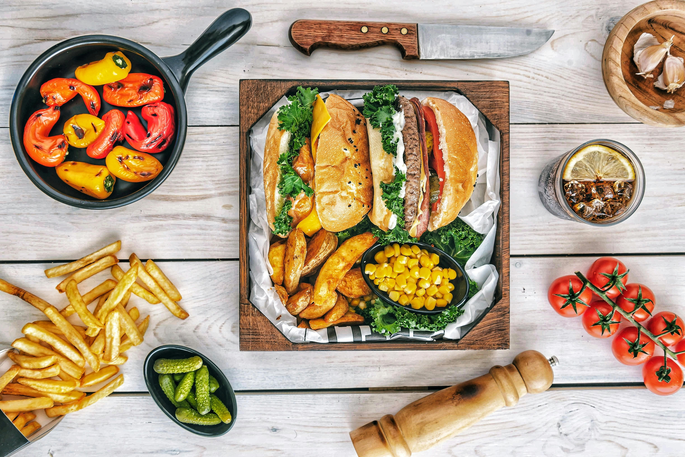
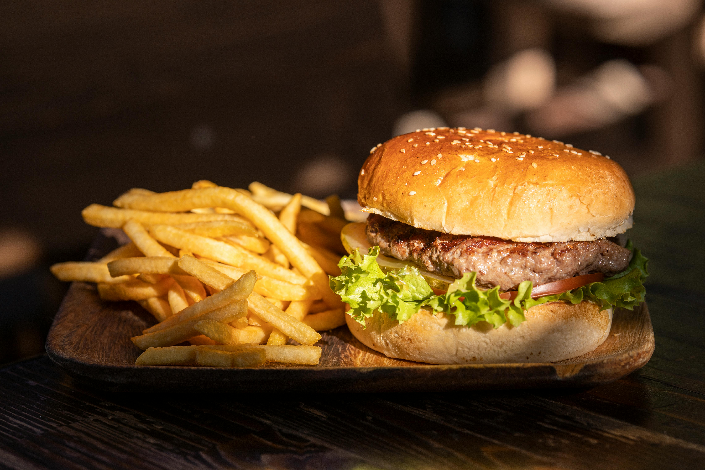
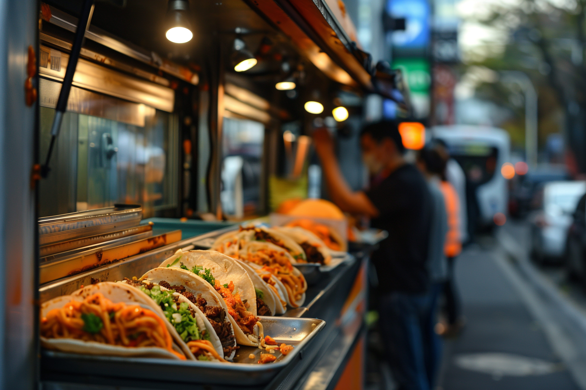
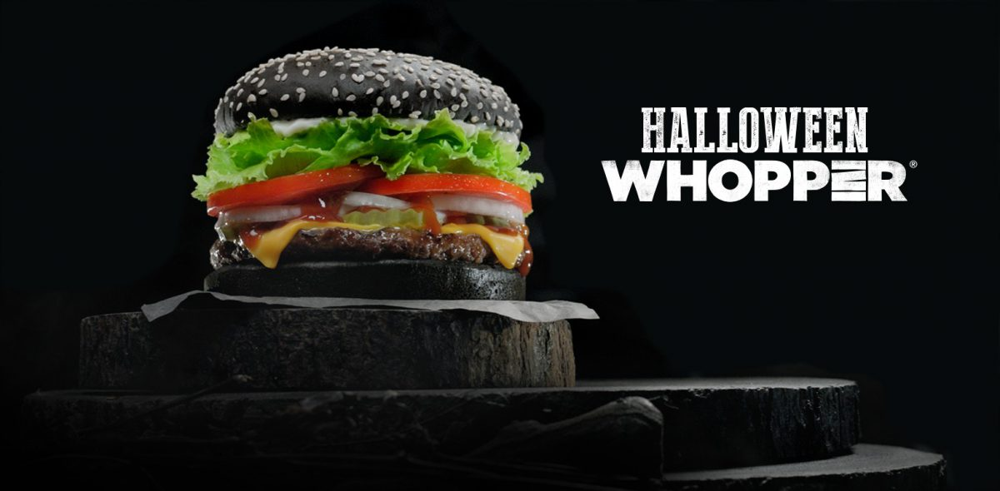
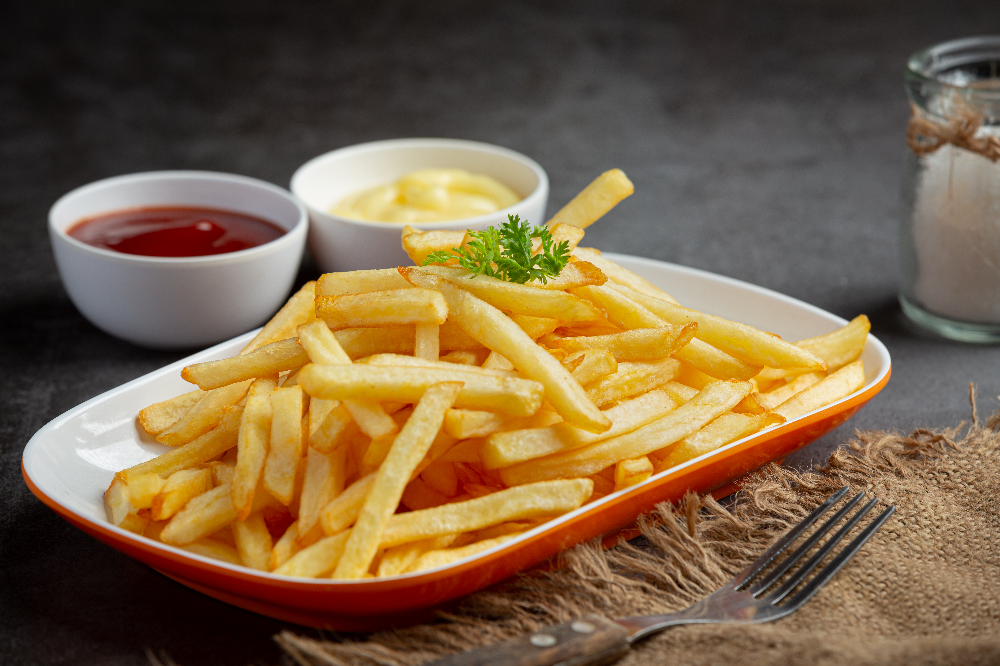
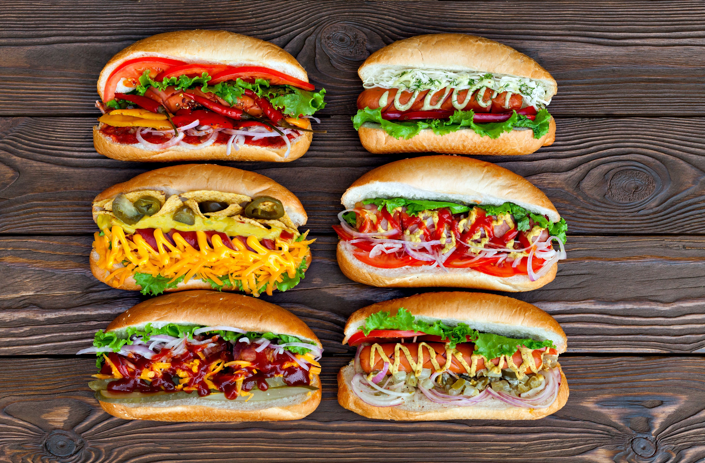

Special
A Feast for the Senses: Indulging in Gourmet Burgers & Sides 27 Feb 2025Nothing beats the satisfaction of a perfectly assembled gourmet meal, and this spread is a true food lover's dream. Featuring juicy, well-stuffed sandwiches with fresh toppings, golden crispy fries, and roasted veggies, this meal is a feast for both the eyes and the taste buds. Accompanied by refreshing drinks, crunchy pickles, and a variety of textures, the visual appeal is undeniable.

Food
The Perfect Bite: A Classic Burger & Fries Combo 27 Feb 2025Nothing beats the timeless combination of a juicy burger and crispy golden fries. The perfect blend of a soft sesame bun, fresh lettuce, ripe tomatoes, and a perfectly grilled beef patty makes for a mouthwatering experience.
 Karu💞💞
Karu💞💞
History
Behind the Scenes: How a Fast Food Restaurant Works 28 Feb 2025Fast food restaurants are known for their quick service, delicious meals, and bustling environments. But what really goes on behind the counter? From food preparation to customer service, every step is carefully designed for efficiency and speed.
 Aryan Soni
Aryan Soni

History
The Irresistible Rise of Street Tacos: A Global Sensation 01 Mar 2025Street tacos have taken the world by storm, offering a delicious, affordable, and convenient way to enjoy a flavorful meal. Whether served from food trucks or bustling street vendors, tacos are more than just food—they're a cultural experience.

Food
The Global Craze for Burgers: Why the World Can’t Get Enough? 02 Mar 2025Burgers have become one of the most popular fast foods worldwide, loved for their delicious flavors, endless customization, and convenience. From classic cheeseburgers to gourmet creations, the demand for burgers continues to grow.
 Nirav Babariya
Nirav Babariya

Special
The Rise of the Black Burger: A Bold Twist on a Classic Favorite 04 Mar 2025The black burger has taken the culinary world by storm with its striking appearance and unique flavors. From activated charcoal buns to squid ink-infused variations, this gothic-inspired burger has become a trendy food sensation.

Food
The Irresistible Charm of French Fries: A Global Favorite 05 Mar 2025Crispy, golden, and delicious—French fries are one of the most beloved snacks worldwide. Whether served with ketchup, mayonnaise, or gourmet toppings, these fried potato delights have won hearts across cultures.
History
The Timeless Love for Coffee: A Perfect Start to the Day 05 Mar 2025A warm cup of coffee is more than just a beverage—it’s an experience. From the aroma of freshly ground beans to the first sip of a perfectly brewed cup, coffee has the power to awaken the senses and bring comfort. Whether enjoyed alone in peaceful solitude or shared over conversations, coffee is a universal symbol of warmth and energy.
 Vivek Chityal
Vivek Chityal

Special
The Art of Hot Dogs: A Flavorful Journey 07 Mar 2025Hot dogs are more than just a quick snack—they are a culinary experience with endless possibilities. From classic mustard and ketchup toppings to gourmet creations loaded with cheese, jalapeños, and fresh veggies, hot dogs have become a beloved comfort food around the world.
Karu💞💞